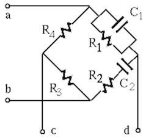

Next: Butterworth filters Up: Chapter 6: Active Filter Previous: The Twin-T notch (band-stop)
The Wien bridge is a particular type of the Wheatstone bridge of which two of the four arms are composed of a capacitor as well as a resistor in parallel and series:

For this bridge to balance, the ratios of the left and right branches should be the same:
 , we have:
, we have:
Wien-Robinson Filter

 , i.e.,
, i.e.,
Further reading for